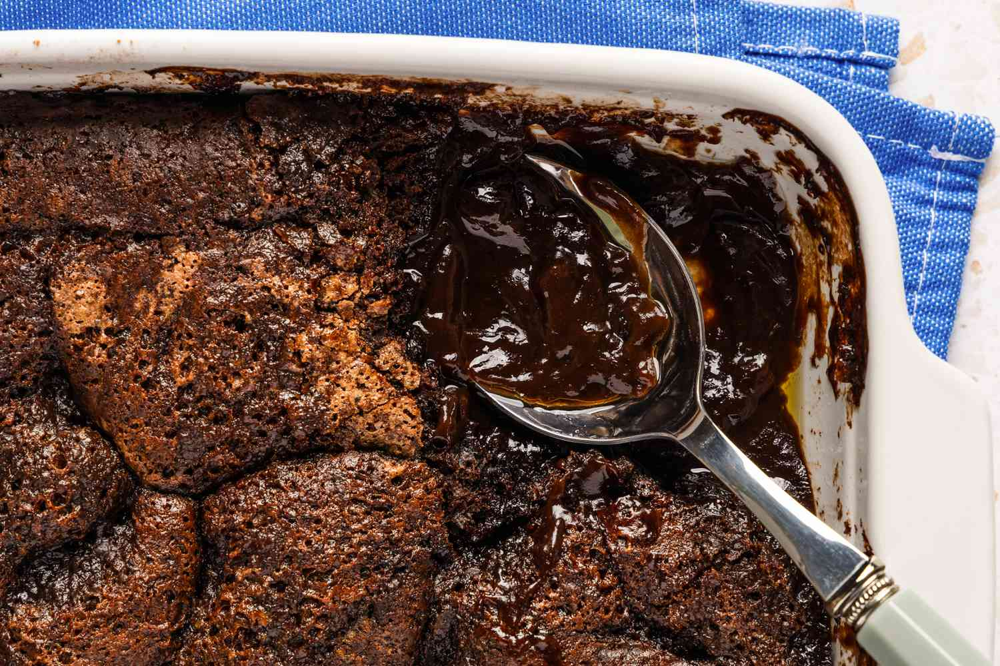

Chocolate Cobbler
Home

Description
A very easy but unique way of making a dessert. I have never seen another recipe where
the last step is to pour boiling water over dry ingredients and not stir it all.
This is a great dessert served warm, and a side of vanilla ice cream goes well with it.
It is just as good reheated (the microwave makes it just as gooey and warm the second time).
Ingredients
For base:
- 1 ½ sticks of butter
- 2 cups self-rising flour
- 1 ½ cup sugar
- 1 tsp vanilla
- 1 cup milk
- 1 cup chopped pecans
- 3 tablespoons cocoa
For topping:
Instructions
For base:
- Preheat oven to 350 degrees F
- Melt butter in deep pan in preheated oven
- While butter is melting, mix remaining ingredients for base and set aside
- Boil 3 cups of water
For topping:
- Mix sugar and cocoa together. Set aside
To combine:
- After the butter has melted, spoon the base mixtures on top. Do not stir
- Sprinkle topping mixture on top. Do not stir.
- Pour boiling water on top. Do not stir.
- Bake for 30 minutes.